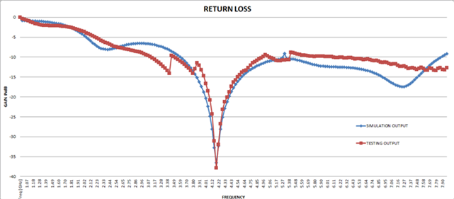

MIMO Antenna for Satellite Communications with Enhanced Isolation
The main aim of project is to design a high performance multi input and multi output(MIMO) antenna with dual-frequency operation and high-isolation for efficient and reliable satellite communication. This project is done by me and my friends in college as major project.
INTRODUCTION
Satellite communications have revolutionized global connectivity by enabling data, multimedia, and audio transfer over long distances. The implementation of MIMO antennas enhances communication performance at both the transmitter and receiver ends by using multiple antennas, improving data throughput, signal quality, and spectrum efficiency.
ABSTRACT
A multiple-input and multiple-output (MIMO) two-port antenna with dual frequencies in the C-band characteristics resonating at 7.5GHz frequency is designed. The antenna consists of two symmetrical antenna elements and a defected ground plane, which reduces mutual coupling and enhances isolation. The performance parameters include return loss, radiation pattern, and gain, making it suitable for satellite communications.


ANTENNA DESIGN
The antenna consists of two symmetrical incomplete circular radiators with step-shaped strips and L-shaped branches. A 50Ω micro-strip feed line is fed to the antenna. The design includes a defected ground plane with a rectangular slit, achieving high isolation.


Results and Observations
S-Parameter (S11) Results
The measured return loss and frequency bands cover 3.73-5.34GHz and 6.71-7.64GHz, with high isolation values indicating effective performance.
Radiation Pattern
The radiation pattern shows a highest gain of 23.6dB, indicating excellent performance in satellite communication scenarios.
Current Distribution
The current distribution shows reduced mutual coupling effects, confirming the effectiveness of the defected ground structure.
For more detail informationView Report


Conclusion
The designed MIMO antenna achieves high isolation and impressive performance parameters, making it suitable for satellite communications. The dual-frequency operation and compact design further enhance its applicability in real-world scenarios.